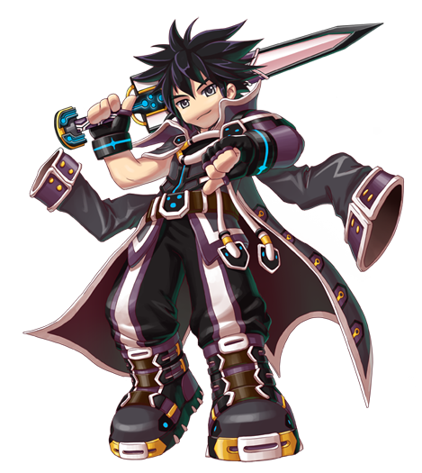
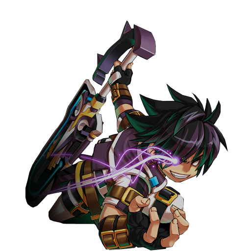
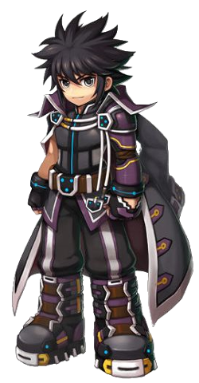
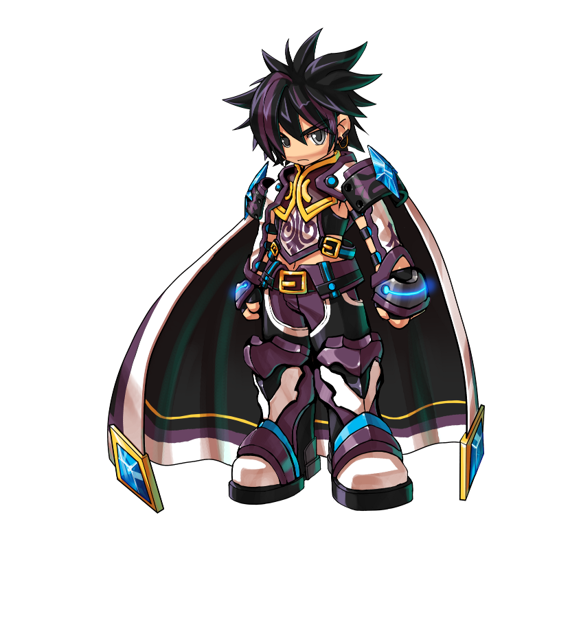
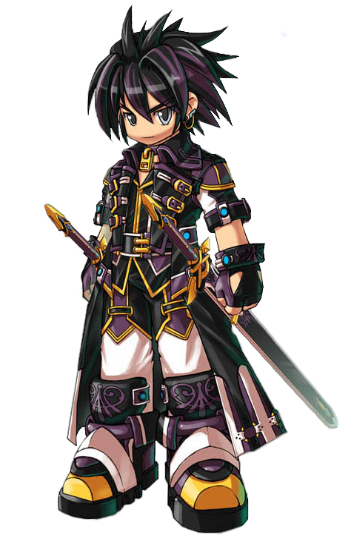
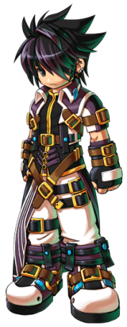

Informações Principais do Personagem
Nome: Ercnard Sieghart
Idade: Mais de 600 anos
Origem: Canaban

Há quase 6 séculos Sieghart já era conhecido como um desastre natural por todo reino de
Canaban. Seus feitos heróicos foram ganhando tamanha proporção que sua história foi adquirindo
caráter lendário.
Diziam que ele era capaz de devastar montanhas e arrasar civilizações inteiras em um piscar de olhos, tudo isso graças à sua velocidade e a sua indiscutível força. Mas tamanho talento era usado pelo bem de seu povo, e lhe garantiu diversos títulos: desde “o gênio da espada” até “o maior herói de Vermécia”.
Diziam que ele era capaz de devastar montanhas e arrasar civilizações inteiras em um piscar de olhos, tudo isso graças à sua velocidade e a sua indiscutível força. Mas tamanho talento era usado pelo bem de seu povo, e lhe garantiu diversos títulos: desde “o gênio da espada” até “o maior herói de Vermécia”.
Com tamanha habilidade e coragem, Sieghart sempre defendeu seu reino de todos os monstros e
ameaças, mas sempre apareciam mais e mais. Dizem que sua habilidade também o tornou meio
arrogante e superconfiante. Isso o levou a procurar pela fonte de todo o mal em Vermécia, para
destruí-la de uma vez por todas.
Algum tempo após a partida de Sieghart, a notícia de que ele se sacrificou para aprisionar a Rainha das Trevas chegou ao reino de Canaban. O grande herói nunca mais foi visto... Até ser recentemente encontrado pelo grupo da Grand Chase como se ainda fosse um jovem guerreiro!

Algum tempo após a partida de Sieghart, a notícia de que ele se sacrificou para aprisionar a Rainha das Trevas chegou ao reino de Canaban. O grande herói nunca mais foi visto... Até ser recentemente encontrado pelo grupo da Grand Chase como se ainda fosse um jovem guerreiro!
Classes

Gladiador
Arma: Lâmina

Comandante
Arma: Lança e Espada

General
Arma: Espadas

Avatar
Arma: Soluna
Habilidade especial
Fúria
A Fúria do Sieghart é parecida com a do Jin. Ambas requerem carregamento e podem ser ativadas para temporariamente dar ao personagem propriedades especiais. Porém, o método de carregamento e os bônus dados são diferentes.Enquanto não estiver no Modo Fúria, a Barra de Fúria do Sieghart irá encher sozinha (45 segundos para o Avatar, 30 segundos para o resto), ao atacar (Missão) ou ao ser atacado. Porém, usar habilidades pode pausar a barra durante a habilidade.
Quando a barra de Fúria estiver carregada até por volta da marcação de duas barras de MP cheias no mínimo, o comando X.PNG pode ativar o seu Modo Fúria, o envolvendo em uma aura escura. Enquanto estiver neste estado, Sieghart ganha super armadura, aumento de velocidade, e aumento no dano (x1.1), alteração na defesa (aumenta o dano sofrido para o Avatar, reduz o dano sofrido para o resto) e alteração na animação das habilidades. Além disso, a barra de Fúria continuamente diminui, mas usar habilidades irá temporariamente pausar a drenagem. Quando completamente carregado, o Modo Fúria dura aproximadamente 5.6 segundos, enquanto para o Avatar ele dura 10 segundos.
Na animação, o Gladiador e o Comandante tem que se curvar para pegar a "fúria", enquanto o General e o Avatar só a ativam. Além disso, a do Avatar causa um efeito de onda de impacto nos inimigos próximos. o Sieghart fica invencível durante a animação, mas a Barra de fúria continuará a diminuir.
Somente o General, o Avatar e a Árvore de Talentos do Gladiador ganham movimentos que consomem Fúria, e somente o Avatar possui um movimento que consome Fúria até mesmo no modo Fúria.